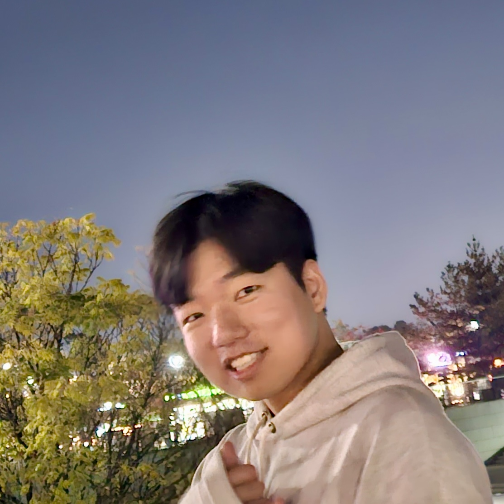
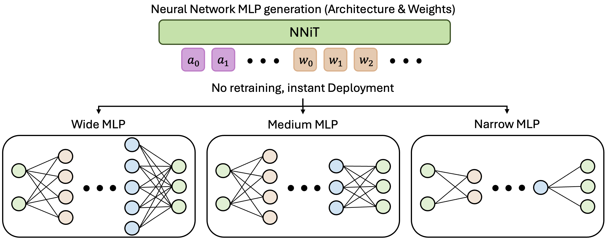
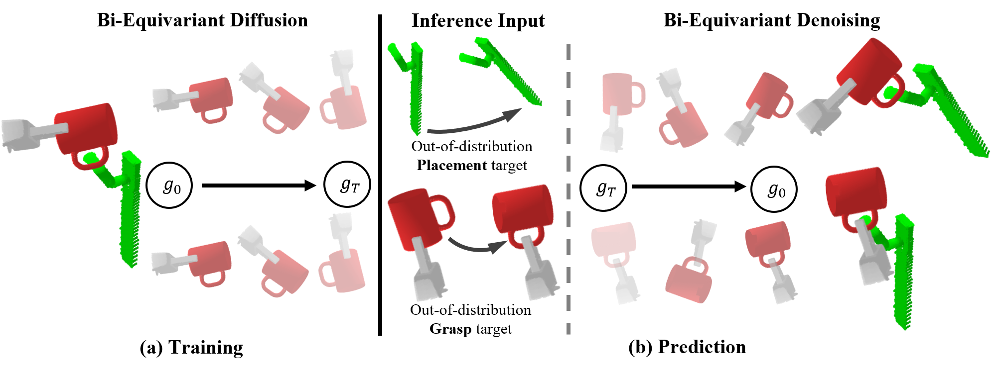
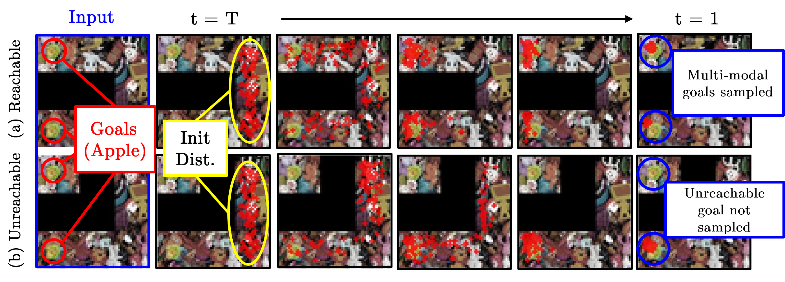
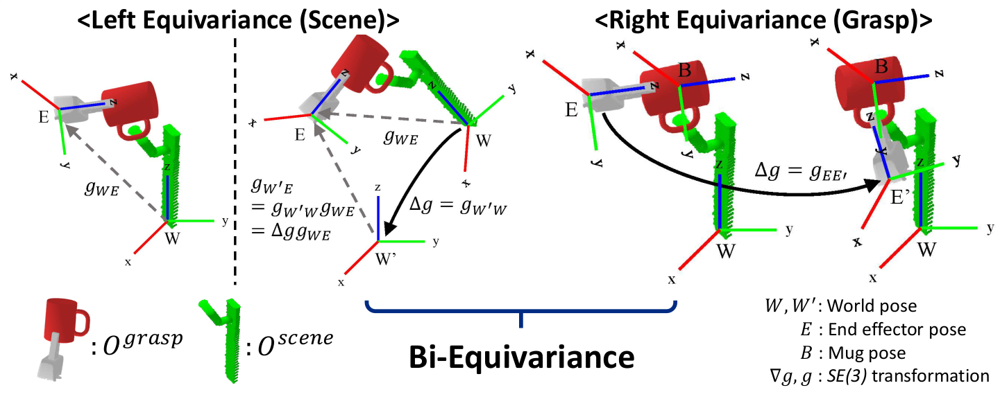
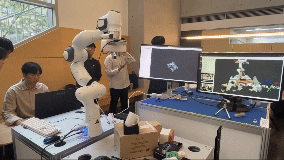

Jiwoo Kim
ECE Ph.D. student · Duke University
I am an ECE Ph.D. student at Duke University, advised by Prof. Miroslav Pajic, and obtained my B.S. in EEE from Yonsei University under Prof. Jongeun Choi. My research builds Generative Models for Deployable Physical AI.

News
| Apr 2026 | NNiT accepted to ICML 2026. |
|---|---|
| Apr 2024 | Started ECE Ph.D. at Duke. |
| Apr 2024 | Diffusion-EDFs selected as a Highlight (top 11.9%) at CVPR 2024. |
| Jul 2023 | Best Paper Award in RSS 2023 Workshop on Symmetries in Robot Learning. |
Selected Publications
(* indicates equal contribution)
-

-


-

-

Projects
-
